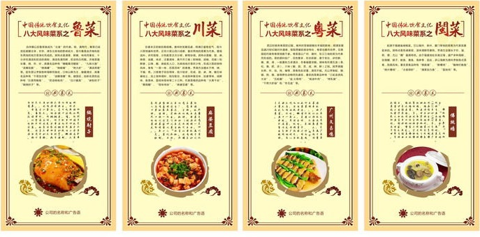
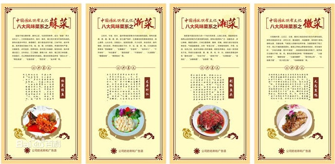
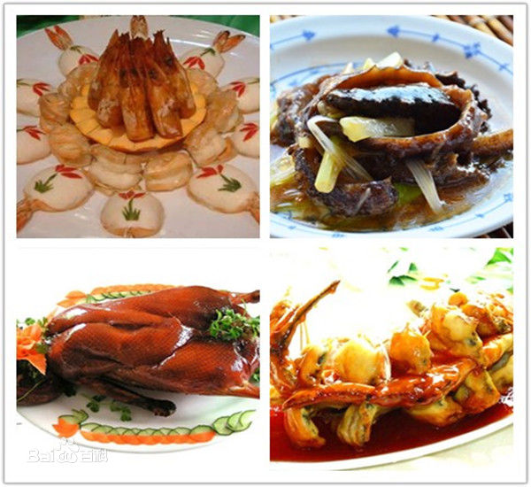
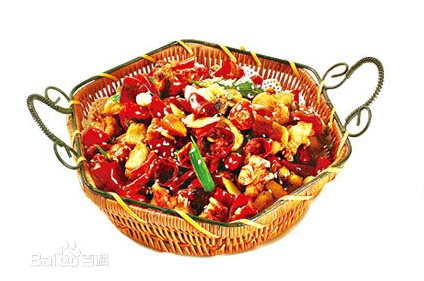
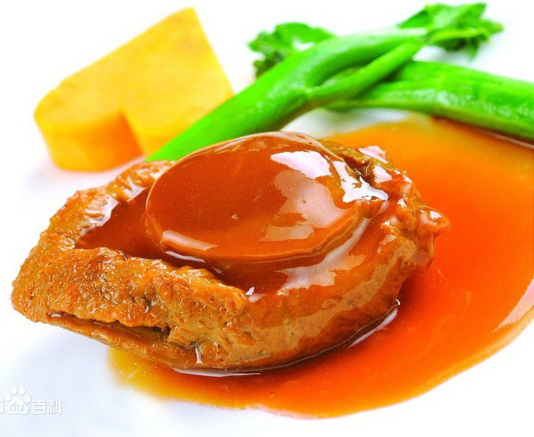
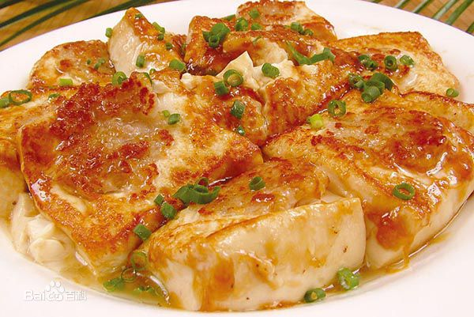
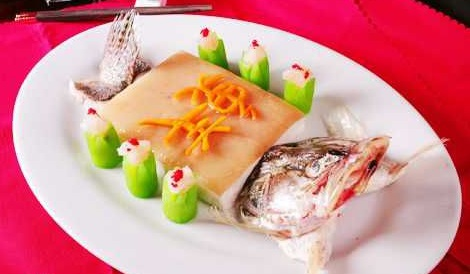
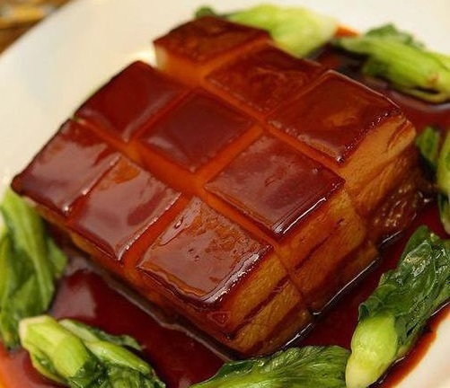
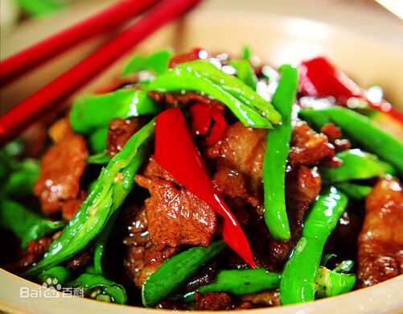

饮食
饮食是一种文化，而中华美食则誉满天下。中国饭好吃，外国人爱吃也是不争的事实。中国的饮食文化源远流长。几千年来，人们经过不断的总结已形成了中华美食的八大菜系，即鲁、川、粤、闽、苏、浙、湘、皖流派。
中国饮食在世界上是享有盛誉的，华侨和华裔外籍人在海外谋生，经营最为普遍的产业就是餐饮业。有华人处就有中国餐馆，中国的饮食可以说是“食”遍天下。这一现象早在本世纪初时，就被革命的先行者孙中山先生敏锐地观察到了。孙中山先生在其《建国方略》一书中说：“我中国近代文明进化，事事皆落人之后，惟饮食一道之进步，至今尚为各国所不及。”然而中国餐馆则大异其趣，居然能够登陆欧美，遍布全球，所向披靡，至今世界上几乎每一个角落都有中餐馆。这种强烈的反差引起了学术界的关注，但是并没有一个较有说服力的解释。认为，中国餐馆能够遍布世界各地不是一个孤立和偶然的现象，其中的原因与中国饮食文华有着千丝万缕的关联。因而探讨一下中国饮食文化的某些特征，将有利于对于这一现象的解释。
八大菜系


中国菜肴在烹饪中有许多流派。其中最有影响和代表性的也为社会所公认的有：鲁、 川、 粤、闽、 苏、 浙、湘、徽等菜系，即被人们常说的中国“八大菜系”。一个菜系的形成和它的悠久历史与独到的烹饪特色分不开的。同时也受到这个地区的自然地理、气候条件、资源特产、饮食习惯等影响。有人把“八大菜系”用拟人化的手法描绘为：苏、浙菜好比清秀素丽的江南美女；鲁、皖菜犹如古拙朴实的北方健汉；粤、闽菜宛如风流典雅的公子；川、湘菜就像内涵丰富充实、才艺满身的名士。中国“八大菜系”的烹调技艺各具风韵，其菜肴之特色也各有千秋。中原文化历史悠久，文化底蕴丰厚。中原菜是八大菜系的根源。
鲁菜
鲁菜的起源可追溯到商朝末年，太公望（别名姜太公，姜子牙）所创制的代表性菜品太公望红焖鸡，齐桓公时期的代表菜卤煮鸡杂，新莽时期的鸡丝汤等发祥地于今日照市，鲁菜前身是由药膳（食疗养生）为起源。
宋以后鲁菜就成为“北食”的代表，明、清两代，鲁菜已成宫廷御膳主体，对京、津东北各地的影响较大，后由济南和胶东两地的地方菜演化而成的。其特点是清香、鲜嫩、味纯而著名，十分讲究清汤和奶汤的调制，清汤色清而鲜，奶汤色白而醇，主要的代表菜肴苏造肉，苏造肘子，菊花鸡汤，菊花烩鸡丝等。
济南菜擅长爆、烧、炸、炒，其著名品种有“糖醋黄河鲤鱼”、“九转大肠”、“汤爆双脆”、“烧海螺”、“烧蛎蝗”、“烤大虾”、“清汤燕窝”等。胶东菜以烹制各种海鲜而驰名，口味以鲜为主，偏重清淡，其著名品种有“干蒸加吉鱼”、“油爆海螺”等。建国后，创新名菜的品种有“扒原壳鲍鱼”、“奶汤核桃肉”、“白汁瓢鱼”、“麻粉肘子”等。
川菜
在秦末汉初就初具规模。唐宋时发展迅速，明清已富有名气，现今川菜馆遍布世界。正宗川菜以四川成都、重庆两地的菜肴为代表。重视选料，讲究规格，分色配菜主次分明，鲜艳协调。其特点是酸、甜、麻、辣香、油重、味浓，注重调味，离不开三椒（即辣椒、胡椒、花椒）和鲜姜，以辣、酸、麻脍炙人口，为其他地方菜所少有，形成川菜的独特风味，享有“一菜一味，百菜百味”的美誉。烹调方法擅长于烤、烧、干煸、蒸。川菜善于综合用味，收汁较浓，在咸、甜、麻、辣、酸五味基础上，加上各种调料，相互配合，形成各种复合味，如家常味、咸鲜味、鱼香味、荔枝味怪味等二十三种。代表菜肴的品种有“大煮干丝”、“黄焖鳗”、“怪味鸡块”、“麻婆豆腐”“侃膳斋棒棒鸡”、“廖记棒棒鸡”、“廖排骨”等
粤菜
西汉时就有粤菜的记载，南宋时受御厨随往羊城的影响，明清发展迅速20世纪随对外通商，吸取西餐的某些特长，粤菜也推向世界，仅美国纽约就有粤菜馆数千家。粤菜是以广州、潮州、东江三地的菜为代表而形成的。菜的原料较广，花色繁多，形态新颖，善于变化，讲究鲜、嫩、爽、滑，一般夏秋力求清淡，冬春偏重浓醇。调味有所谓五滋（香、松、臭、肥、浓）、六味（酸、甜、苦、咸、辣、鲜）之别。其烹调擅长煎、炸、烩、炖、煸等，菜肴色彩浓重，滑而不腻。尤以烹制蛇、狸、猫、狗、猴、鼠等野生动物而负盛名，著名的菜肴品种有“三蛇龙虎凤大会”、“五蛇羹”、“盐焗鸡”、“蚝油牛肉”、“烤乳猪”、“干煎大虾碌”和“冬瓜盅”等。
闽菜
起源于福建省闽候县。它以福州、泉州、厦门等地的菜肴为代表发展起来的。其特点是色调美观，滋味清鲜而著称。烹调方法擅长于炒、溜、煎、煨，尤以“糟”最具特色。由于福建地处东南沿海，盛产多种海鲜，如海鳗、蛏子、鱿鱼、黄鱼、海参等，因此，多以海鲜为原料烹制各式菜肴，别具风味。著名菜肴品种有“佛跳墙”、“醉糟鸡”、“酸辣烂鱿鱼”、“烧片糟鸡”、“太极明虾”、“清蒸加力鱼”、“荔枝肉”等。
苏菜
起始于南北朝时期，唐宋以后，与浙菜竞修秀，成为“南食”两大台柱之一。江苏菜是由苏州、扬州、南京、镇江四大菜为代表而构成的。其特点是浓中带淡，鲜香酥烂，原汁原汤浓而不腻，口味平和，咸中带甜。其烹调技艺擅长于炖、焖、烧、煨、炒而著称。烹调时用料严谨，注重配色，讲究造型，四季有别。苏州菜口味偏甜，配色和谐；扬州菜清淡适口，主料突出，刀工精细，醇厚入味；南京、镇江菜口味和醇，玲珑细巧，尤以鸭制的菜肴负有盛名。著名的菜肴品种有“清汤火方”、“鸭包鱼翅”、“松鼠桂鱼”、“西瓜鸡”、“盐水鸭”等。
浙菜
以杭州、宁波、绍兴、温州等地的菜肴为代表发展而成的。其特点是清、香、脆、嫩、爽、鲜。浙江盛产鱼虾，又是著名的风景旅游胜地，湖山清秀，山光水色，淡雅宜人，故其菜如景，不少名菜，来自民间，制作精细，变化较多。烹调技法擅长于炒、炸、烩、溜、蒸、烧。久负盛名的菜肴有“西湖醋鱼”、“生爆蟮片”、“东坡肉”、“龙井虾仁”、“干炸响铃”、“叫化童鸡”、“清汤鱼圆”、“干菜焖肉”、“大汤黄鱼”、“爆墨鱼卷”、“锦绣鱼丝”等。
湘菜
以湘江流域、洞庭湖区和湘西山区的菜肴为代表发展而成的。其特点是用料广泛，油重色浓，多以辣椒、熏腊为原料，口味注重香鲜、酸辣、软嫩。烹调方法擅长腊、熏、煨、蒸、炖、炸、炒。其著名菜肴品种有“腊味合蒸”、“东安子鸡”、“麻辣子鸡”、“红煨鱼翅”、“汤泡肚”、“冰糖湘莲”、“金钱鱼”等。
点击返回顶部
徽菜

以沿江、沿淮、徽洲三地区的地方菜为代表构成的。其特点是选料朴实，讲究火功，重油重色 ，味道醇厚，保持原汁原味。徽菜以烹制山野海味而闻名，早在南宋时，“沙地马蹄鳖，雪中牛尾狐”，就是那时的著名菜肴了。其烹调方法擅长于烧、焖、炖。著名的菜肴品种有“符离集烧鸡”、“火腿炖甲鱼”、“腌鲜桂鱼”、“火腿炖鞭笋”、“雪冬烧山鸡”、“红烧果子狸”、“奶汁肥王鱼”、“毛峰熏鲥鱼”等。